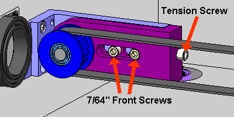
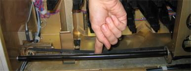
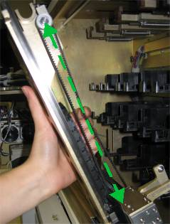

This procedure describes how to replace the x- and z-idler pulley in the reagent storage module.
Replace the x- and z-idler pulley in the reagent storage module when the pulley:
rotates roughly.
shows wear.
clicks.
Note: The entire pulley must be replaced because the bearing is pressed into the pulley.
Open the main upper right cover.
Remove power from the motors and reagent coolers by using both switches on the Power Distribution PCB.
Open the SPU.
Open the upper left cover of the instrument.
Loosen the locking screw.
The locking screw prevents the SPU from swinging outward from the instrument. It is not necessary to remove the screw because the SPU plate is slotted.
Remove the 3/16-in hex bolt located near the right end of the SPU cover.
Open the lower right access panel on the front of the instrument.
Pull the spring-loaded captive pin that holds the panel (located under the SPU) to the frame.
Grasping the SPU near the right end, swing the right end away from the instrument.
Warning: The SPU off-load area slides forward and rearward as the SPU is swung in and out. To prevent damage to the SPU or the off-load area, confirm that nothing obstructs the movement of the off-load area as the SPU is moved.
(For China and Canada Only.) On the front facing the edge of the Framus assembly, install the Chinese and French labels adjacent to the existing English label.
Note: The labels are in the DxI Installation Kit.
Prepare the instrument.
Remove the cover on the reagent storage module (six 5/32-in hex screws).
Remove and refrigerate the reagent packs.
Manually center the gripper along the bottom shaft of the reagent storage module.
Replace the x-axis pulley.
Remove the front screws (two 7/64-in hex) that secure the pulley to the lower left mounting bracket.

Remove the tension screw (one 7/64-in hex) from the right side of the pulley.
Note: For extra tool clearance, use the circular side openings in the pack waste chute.
Remove the pulley from the gripper belt and mounting bracket.
Place the belt around the pulley.
Insert and adjust the tension screw (one 7/64-in hex). Check for correct belt tension.
Manually center the gripper along the bottom shaft of the reagent storage module. Using moderate pressure, depress the upper portion of the belt midway between the left wall of the reagent storage module and the gripper gantry.

If the upper portion of the belt barely touches the lower portion of the belt, then the tension is correct and no action is required.
If the upper portion of the belt floats above the lower portion of the belt, then the tension is tight. Loosen the tension screw, and recheck.
If the upper portion of the belt touches the lower portion of the belt with little or no pressure, then the tension is loose. Tighten the tension screw, and recheck.
Secure the pulley with the front screws (two 7/64-in hex).
Remove the tension screw, apply Loctite 222, and secure the tension screw.
(Optional) Replace the z-axis pulley on instruments that have a hex-cap tension screw:
Instruments with serial numbers above 600428 have a hex-cap screw to simplify removal of the pulley using a 1/4-in wrench.
Remove the z-axis pulley.
Remove the two side screws (7/64-in hex screws) securing the pulley to the upper portion of the gripper carriage.
Use a 1/4-in wrench to loosen the tension screw on top of the pulley.
Remove the pulley.
Install the z-axis pulley.
Thread the tension screw into the pulley.
Place the belt around the new upper pulley.
Adjust the tension screw to achieve proper belt tension.
Note: To check tension, move the gripper downward to the end travel and deflect the belt in the center. With moderate pressure, the belt deflects to a vertical line from the center of the top pulley.

Secure the pulley to the bracket using the side screws (two 7/64-in hex screws).
Remove the tension screw, apply Loctite 222, and then secure the tension screw.
(Optional) Replace the z-axis pulley on instruments that have a socket-head tension screw.
Instruments with serial numbers below approximately 600428 have a socket-head screw for the tension screw. Because of the small working area, the gripper gantry must be rotated outward to loosen the pulley tension screw with a hex wrench.
Rotate the gantry outward.
Remove the four side screws (7/64-in hex screws) securing the lower spline shaft. These screws are located on the inside wall of the lower right corner by the right end of the spline shaft.
Hold the gripper gantry with your left hand, while twisting the z-drive motor with your right hand and pulling the entire assembly towards the right.
Note: After the left side bearing of the assembly is clear of the side plate, the gripper gantry will drop enough to clear the red linear bushing.
Tilt the gripper gantry outward to allow access to the pulley.
Remove the z-axis pulley.
Remove the two side screws (7/64-in hex screws) securing the pulley to the upper portion of the gripper carriage.
Loosen the tension screw from the top of the pulley.
Remove the pulley.
Install the z-axis pulley.
Place the belt around the new upper pulley.
Insert and adjust the tension screw (one 7/64-in hex screw) to achieve the correct belt tension.
Note: To check tension, move the gripper downward to the end travel and deflect the belt in the center. With moderate pressure, the belt deflects to a line from the center of the top pulley to the bottom pulley.
Secure the pulley to the bracket using the side screws (two 7/64-in hex screws).
Remove the tension screw, apply Loctite 222, and then secure the tension screw.
Reassemble the module.
Position the red linear bushing over the gripper gantry with the bushing retainer clip:
In-line with the groove on the top of the gripper gantry.
Opening facing up.
Lift the gripper gantry into position. Slide the lower spline shaft to the left until the lower left bearing is seated in the hole in the lower left side plate.
Note: Be sure that the bushing clip is seated correctly in the groove in the gripper gantry.
Rotate the z-motor to align with the holes in the lower right plate.
Replace the four 7/64-in hex screws to secure the z-motor to the lower right side plate.
Verify operation of the reagent storage module.
Manually move the gripper the full length of both z-motion and x-motion to verify free movement.
Manually move the gripper to the home position (lower left corner).
Bypass the cover interlock switches on the SPU and reagent storage by taping them down.
Power on the MCC boards and reagent storage coolers.
Initialize the instrument with
Remap enabled.
Warning: Do not place your hands inside the storage module during initialization, the gripper and reagent load drawer will be moving.
Confirm that there were no gripper errors during the remap process.
Install the cover on the reagent storage module (six 5/32-in hex screws).
Close the SPU.
The SPU is hinged on the left side. The right side is released and can be swung out from the instrument to approximately 45 degrees.
Warning: The SPU off-load area slides forward and rearward as the SPU is swung in and out. To prevent damage to the SPU or the off-load area, confirm that nothing obstructs the movement of the off-load area as the SPU is moved.
Grasping the SPU near the right end, swing the right end toward the instrument.
Pull the spring-loaded captive pin to attach the panel (located under the SPU) to the frame.
Close the lower right access panel on the front of the instrument.
Insert the 3/16-in hex bolt.
Tighten the bolt that holds the SPU from swinging outward from the instrument (locking screw).
Close the upper left cover of the instrument.
Note: Initialize the instrument after opening and closing the SPU, because a switch is actuated when the SPU is opened.
Return the instrument to service.
Initialize the system.
Load all the reagent packs that were removed from the storage module.